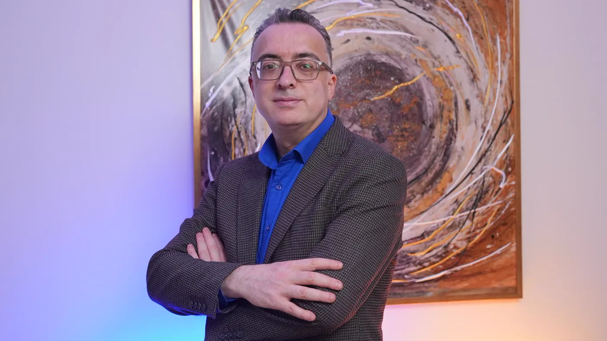

Hekim · Aile hekimliği ve medikal estetik
Uzm. Dr. Rahmi Cebeci
Aile Hekimliği Uzmanı · Medikal Estetik Sertifikalı
2005’te tıp fakültesinden mezun oldu ve o günden bu yana hekim olarak çalışıyor. Aile Hekimliği uzmanıdır; estetik alandaki yetkisi Sağlık Bakanlığı onaylı bir sertifikaya dayanır. Bakırköy’deki muayenehanede muayene, plan, uygulama ve kontrol aynı elde yürür. Çıkış noktası şikâyeti kişinin bütününden ayırmadan değerlendirmek; hedef ise yüzün kendi ifadesini koruyan ölçülü bir sonuçtur.

Tek hekim ilkesi
Sizi muayene eden hekim, uygulamayı da yapıyor mu?
Bir estetik başvurunun yolu birkaç kişiye bölündüğünde, planın hangi gerekçeyle kurulduğu kolayca unutulur. İlk görüşmedeki notlar uygulama anına, uygulamadaki ayrıntılar da kontrol gününe eksik ulaşır.
Bu muayenehanede zincirin tek halkası vardır. Öykünüzü dinleyen, bölgeyi muayene eden, ürünü ve miktarını belirleyen, işlemi yapan ve kontrolde sonucu değerlendiren aynı hekimdir. İşlem sırasında planı değiştirmek ya da durdurmak gerekirse bu karar da onundur.
“Hedef, yüzün kendine ait ifadesini koruyan ölçülü bir sonuçtur.”
İşlemi hekim yapar
Enjeksiyonlar da lazer ve cihaz seansları da hekim dışında bir çalışana bırakılmaz.
Tek dosya
Öykünüz, muayene notları, kullanılan ürünün lot bilgisi ve uygulanan bölge aynı dosyada toplanır; sonraki kararlar bu kayda dayanır.
Kime soracağınız belli
Haftalar sonra bir değişiklik fark ederseniz işlemi yapan hekime ulaşırsınız; her şeyi baştan anlatmanız gerekmez.
Eğitim ve deneyim
Hekimlik eğitimi nerede alındı, nerede sürdü?
Aşağıda hekimin tıp eğitimi, uzmanlık süreci, görev yaptığı hastaneler ve medikal estetik yetki belgesi özetlenmiştir. Muayenehanede hangi işlemlerin yapılabileceği de bu çerçeveyle belirlenir.
Tıp eğitimi
Hacettepe Üniversitesi Tıp Fakültesi (2005) mezunudur. 2005’ten bu yana hekim olarak çalışmaktadır.
Aile Hekimliği Uzmanı
Aile Hekimliği Uzmanlığı eğitimini tamamlamıştır. Bu dal; her yaştan kişiyi, kronik hastalıkların izlenmesini ve birden fazla ilacın birlikte kullanımını bir arada ele almayı öğretir. Estetik bir başvuruda da aynı bütüncül bakış kullanılır.
Uzmanlık eğitimindeki rotasyonlar
Uzmanlık eğitimi sırasında Endokrinoloji, Hematoloji, Genel Cerrahi, Psikiyatri, Kadın Hastalıkları ve Doğum, Çocuk Sağlığı ve Hastalıkları kliniklerinde çalışmıştır. Hormon dengesi, kan değerleri, ruh sağlığı ve gebelik gibi başlıklar, estetik bir planın öncesinde de sorulması gereken sorulara dönüşür.
Görev yaptığı hastaneler
Ankara Atatürk Eğitim ve Araştırma Hastanesi
Bakırköy Prof. Dr. Mazhar Osman Ruh Sağlığı ve Sinir Hastalıkları EAH
Bakırköy Yenimahalle Kadın Doğum ve Çocuk Hastalıkları Hastanesi
Ankara Dr. Sami Ulus Kadın Doğum, Çocuk Sağlığı ve Hastalıkları EAH
Medikal estetik sertifikası
Sağlık Bakanlığı onaylı Medikal Estetik Uygulama Sertifikası sahibidir; sertifika eğitimini Ulus Liv Hospital bünyesinde tamamlamıştır. Muayenehanede yapılan enjeksiyon ve cihaz uygulamaları bu belgenin kapsamında kalır.
Birikimin muayeneye yansıması
Farklı dallarda ve farklı hastanelerde geçen yıllar, bir cilt ya da yüz şikâyetini genel sağlıktan ayırmadan okumayı gerektirir. Kullanılan ilaçlar, kronik hastalıklar ve yaşam koşulları planın doğal bir parçası sayılır.
Çalışma biçimi
Muayene odasında öncelik ne?
Kişinin bütünü
Aile hekimliği, bir şikâyeti uyku düzeni, kullanılan ilaçlar ve genel sağlıkla birlikte okumayı öğretir. Yorgun görünen bir yüzün ardında demir eksikliği ya da tiroid sorunu da olabilir; bu ihtimal göz ardı edilmez.
Öykü işlemden önce
Kan sulandırıcı kullanımı, diyabet ya da tiroid gibi kronik bir hastalık, gebelik veya emzirme, yakın zamanda geçirilmiş bir enfeksiyon ve önceki estetik işlemler uygulama gününden önce dosyaya yazılır. Bu bilgiler planın zamanlamasını değiştirebilir.
Ölçülü ve aşamalı
Doğal ifadeyi korumak için ilk seansta gerekenden azıyla başlanması, eksik kalan kısmın kontrolde tamamlanması tercih edilir. Muayene günü işlem yapılması şart değildir; kararınızı evde, acele etmeden verebilirsiniz.
Sağlık hizmetlerinin tanıtımını düzenleyen mevzuat; hasta yorumlarının, memnuniyet beyanlarının, mali bilgilerin ve öncesi–sonrası görsellerinin yayımlanmasına izin vermez. Hekimi başkalarından üstün gösteren ifadeler de bu yasağın içindedir. Diploma, uzmanlık belgesi ve sertifikanın asılları muayenehanede incelenebilir.
Muayenehanede yalnızca Aile Hekimliği uzmanlığının ve medikal estetik sertifikasının izin verdiği işlemler yapılır. Hangi merkezde olursanız olun, işlemi kimin yapacağını sormaktan çekinmeyin: karşınızdaki kişi hekim mi, bu işlem için belgesi var mı?
Devamı
İlgili başlıklar
Muayenehane
Bakırköy’deki muayenehane: odalar, cihazlar, hijyen düzeni ve randevu işleyişi.
OkuNasıl çalışıyoruz
Muayeneden takibe dört adım ve her adımın arkasındaki gerekçe.
OkuNeden bazı işlemleri yapmıyoruz
Cerrahi, saç ekimi ve lazer epilasyon gibi burada yapılmayan işlemler ve nedenleri.
OkuUygulamalar
Enjeksiyon, lazer ve saç uygulamalarının tamamı, gruplarına ayrılmış olarak.
Listeye gitCilt sorunları
Leke, akne izi, dövme ya da saç dökülmesi gibi şikâyetlere göre düzenlenmiş rehber sayfalar.
İnceleBir adım ötesi
Önce konuşalım, sonra birlikte karar verelim
Randevu talebinizi iletişim sayfasındaki form, telefon ya da WhatsApp üzerinden iletebilirsiniz; plan muayenede birlikte kurulur.
Metni hazırlayan ve tıbbi açıdan gözden geçiren: Uzm. Dr. Rahmi Cebeci (Aile Hekimliği Uzmanı · Medikal Estetik Sertifikalı).
Buradaki anlatım herkese yöneliktir; size özel bir teşhis ya da tedavi planı sunmaz, muayenenin yerini tutmaz. Her uygulamanın etkisi kişiye göre farklı olur.